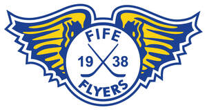

Trade Mark Journal No.2025/026 27 June 2025
UK00004207645 22 May 2025 (14,16,20,21,24,25,40)

- Class 14
- Keyrings; Commemorative statuary cups of precious metal; Bracelets made of embroidered textile [jewelry]; Necklaces.
- Class 16
- Mats of paper for beer glasses; Paper mats for beer glasses; Mats of paper for drinking glasses; Holders for notepads; Pencil cups; Pictures; Photographs; Watercolor pictures; Photo prints; Art pictures; Photo albums; Coloring pictures; Colouring pictures; Prints in the nature of pictures; Picture postcards; Photograph albums; Photographs [printed]; Printed photographs; Mounts of paper for pictures; Postcards and picture postcards; Mini photo albums; Photograph album pages; Signed photographs; Paintings [pictures], framed or unframed; Picture books; Picture cards; Photo albums and collectors' albums; Photograph mounts; Photo storage boxes; Photographic albums; Photograph corners; Paper for printing photographs; Portraits; Plastic pages with pockets for holding photographs; Photographic prints; Photo mounting corners; Scrapbook albums; Unmounted and mounted photographs; Mounted and unmounted photographs; Paper picture mounts; Collages; Photographic reproductions; Collector's photographs of players; Postcards; Scrapbook pages; Pictorial prints; Pens; Ballpoint pens; Ball-point pens; Felt-tip pens; Steel pens [styluses or stencil pens]; Rollerball pens; Inkless pens; Fountain pens; Stands for pens and pencils; Marker pens; Highlighter pens; Balls for ball-point pens; Boxes for pens; Coloured pens; Colouring pens; Marking pens; Pens for marking; Colour pens; Ball pens.
- Class 20
- Picture and photograph frames; Photo frames.
- Class 21
- Mugs; Cups and mugs; Coffee mugs; Ceramic mugs; Earthenware mugs; Porcelain mugs; Mugs of porcelain; Beer mugs; Glass mugs; China mugs; Mugs of china; Insulated mugs; Travel mugs; Mug cosies; Mugs made of porcelain; Mugs made of earthenware; Mug racks; Mugs made of china; Drinking mugs made of porcelain; Vacuum mugs; Mugs made of plastic; Mug sleeves; Mugs made of ceramic materials; Mugs of precious metal; Drinkware; Mug trees; Teapots; Teacups (yunomi); Teacups [yunomi]; Coffee cups; Tankards; Coffee pots; Coasters (tableware); Porcelain coasters; Mugs made of fine bone china; Tea cups; Mugs, not of precious metal; Pint tankards; Coffee stirrers; Tumblers for use as drinking glasses; Carafes; Pewter tankards; Glass cups; Cups; Tumblers; Tea pots; Commemorative statuary cups of porcelain, ceramic, earthenware, terra-cotta or glass; Cups made of earthenware; Cups made of pottery; Figurines [statuettes] of porcelain, ceramic, earthenware or glass; Prize cups of porcelain, ceramic, earthenware, terra-cotta or glass; Goblets; Holders for tumblers; Glass carafes; Glass pots; Glasses, drinking vessels and barware; Pint glasses; Pewter goblets; Souvenir plates; Coffee pots [non-electric]; Beer jugs; Tumblers [drinking vessels]; Cardboard cups; Beer glasses; Liqueur cups; Plastic cups; Glass bowls; Bowls (Glass -); Glassware; Drinking cups; Insulating sleeve holder for beverage cups; Glass flasks [containers]; Sippy cups; Beverage glassware; Ceramic ornaments; Decanters; Glass tableware; Glass flasks; Tableware, cookware and containers; Glass decanters.
- Class 24
- Jersey fabrics for clothing; Fabric for use in the manufacture of clothing; Textile piece goods for clothing; Mats of textile for beer glasses; Tea towels; Woolen blankets; Blankets with sleeves; Woollen blankets; Handkerchiefs of textiles; Knitted fabrics; Hooded blankets; Fabrics for shirts; Cotton blankets.
- Class 25
- Clothing; Jackets [clothing]; Knitwear [clothing]; Ready-to-wear clothing; Woolen clothing; Furs [clothing]; Garments for protecting clothing; Linen clothing; Headbands [clothing]; Headbands for clothing; Gloves [clothing]; Gloves as clothing; Clothes; Aprons [clothing]; Maternity clothing; Kerchiefs [clothing]; Jerseys [clothing]; Shorts [clothing]; Cashmere clothing; Clothing of leather; Leather (Clothing of -); Collars [clothing]; Parts of clothing, footwear and headgear; Knitted clothing; Hoods [clothing]; Windproof clothing; Wristbands [clothing]; Embroidered clothing; Belts for clothing; Rainproof clothing; Casual clothing; Jackets being sports clothing; Jackets (Stuff -) [clothing]; Stuff jackets [clothing]; Clothing for leisure wear; Bottoms [clothing]; Ready-made clothing; Trunks being clothing; Woven clothing; Drawers [clothing]; Drawers as clothing; Infant clothing; Leisure clothing; Athletic clothing; Ties [clothing]; Clothing for sports; Sports clothing; Clothing for children; Bodies [clothing]; Clothing for babies; Clothing for infants; Tops [clothing]; Weatherproof clothing; Clothing for cycling; Pockets for clothing; Handwarmers [clothing]; Water-resistant clothing; Clothing for skiing; Fabric belts [clothing]; Beach clothing; Thermal clothing; Men's clothing; Mitts [clothing]; Dance clothing; Braces for clothing; T-shirts; Tee-shirts; Printed t-shirts; Scarves; Snoods [scarves]; Cashmere scarves; Scarfs; Silk scarves; Head scarves; Shawls and headscarves; Neck scarves; Shoulder scarves; Shawls; Neck scarves [mufflers]; Mufflers [neck scarves]; Mufflers as neck scarves; Shawls and stoles; Sweaters; Neck scarfs [mufflers]; Neck tube scarves; Cardigans; Beanie hats; Cowls [clothing]; Beanies; Headbands; Knit jackets; Hats; Jumpers [sweaters]; Bandanas [neckerchiefs]; Turtleneck sweaters; Wearable blankets in the nature of blankets with sleeves; Kerchiefs; Knit shirts; Woolly hats; Quilted jackets [clothing]; Headscarves; Knitted gloves; Bandanas; Hats (Paper -) [clothing]; Paper hats [clothing]; Paper hats for use as clothing items; Headscarfs; Sweatshirts; Bobble hats; Bandannas; Polo sweaters; Fascinator hats; Fashion hats; V-neck sweaters; Waistcoats [vests]; Woven shirts; Mittens; Blouses; Knitted tops; Party hats [clothing]; Knitted underwear; Headdresses [veils]; Neckties; Turtleneck shirts; Fingerless gloves as clothing; Hooded sweatshirts; Knitwear; Woollen socks; Turtlenecks; Knitted caps; Quilted vests; Fleece jackets; Ski hats.
- Class 40
- Printing of photos; Framing of pictures; Printing of digitally stored pictures and photographs; Digital restoration of photographs; Photo finishing; Printing of images on objects.
Fife Flyers Limited